PORTFOLIO
Thirty-one series, each one shot as a body of work rather than a single frame. Every photograph is available as a signed limited edition print.
Abandoned Post Office
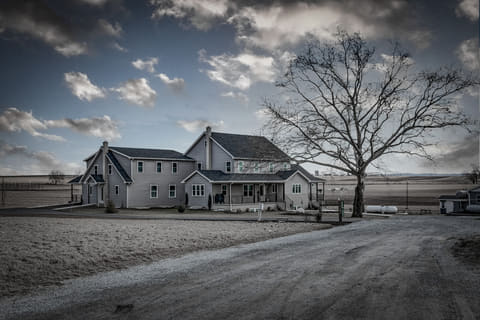
Amish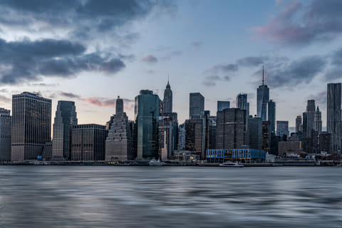
As Night Falls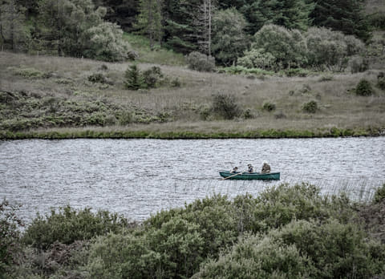
At the Edge of Silence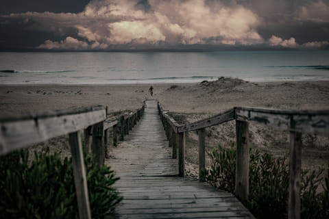
Between Light and Dark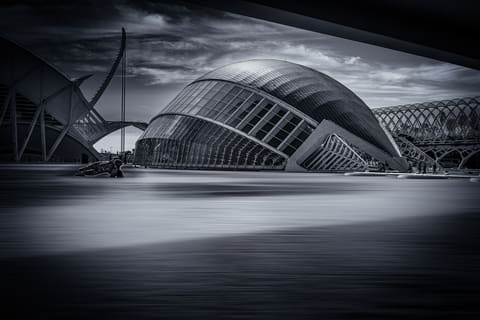
Calatrava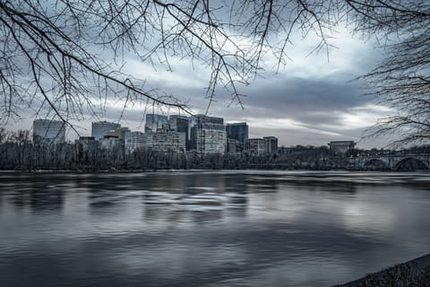
Washington, D.C.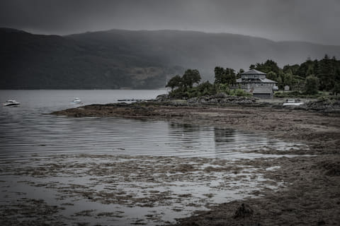
Discovering the Scottish Highlands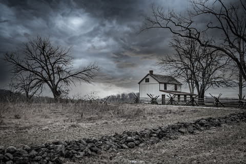
Echoes of War Edinburgh Eternal Tides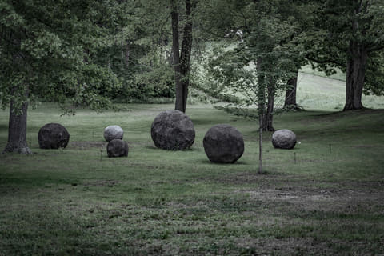
Geometry of Silence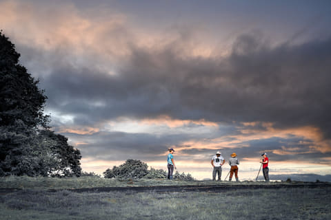
On the Farm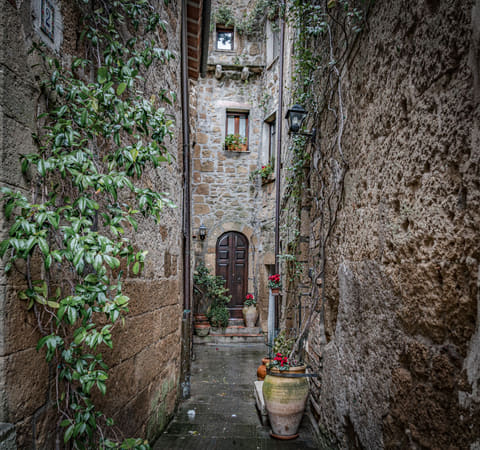
In Tuscany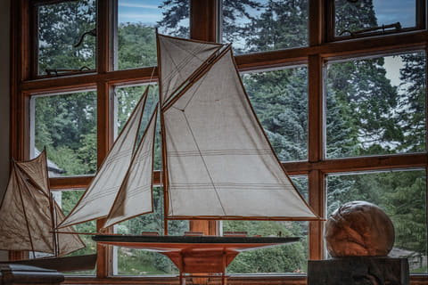
Inside Out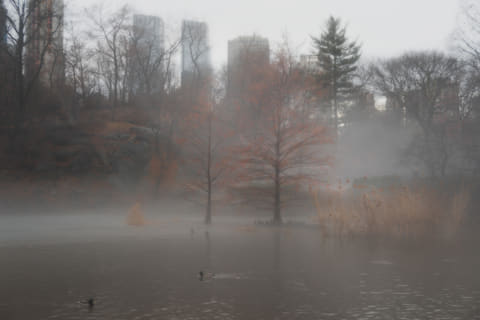
Into the Mist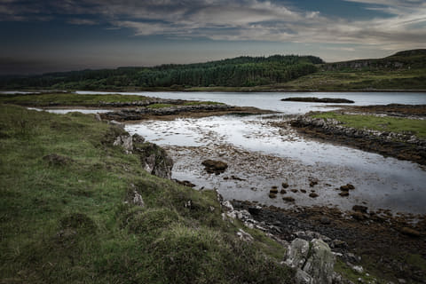
Light Fading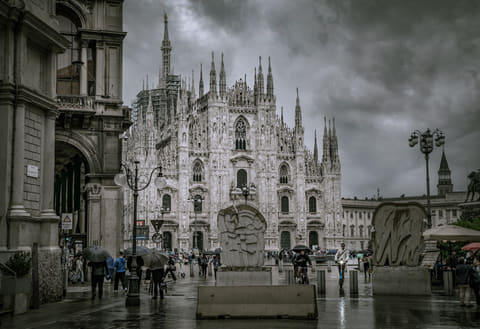
Lines of Milano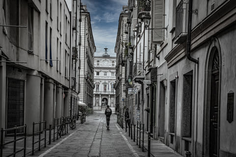
The Little Paris of Italy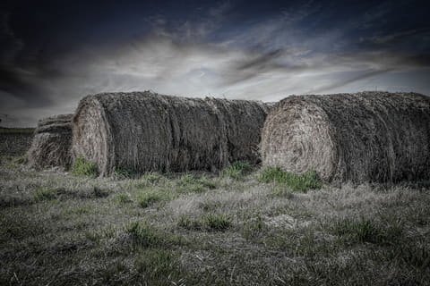
Rural Rhythms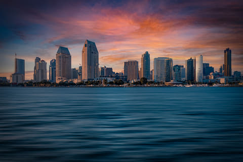
San Diego Skyline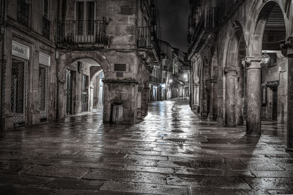
Santiago de Compostela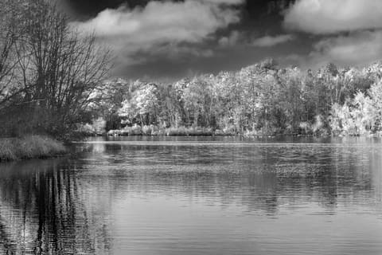
Shadows of Autumn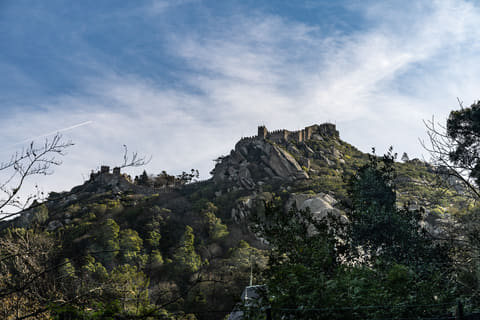
Sintra, Portugal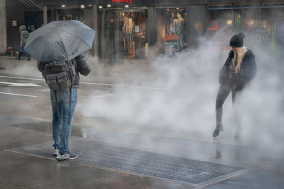
Street Corner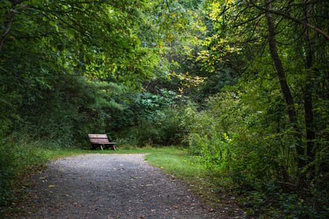
The Clearing The Eternal and the Ephemeral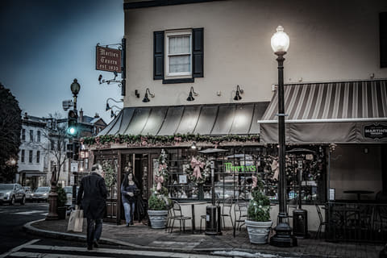
The Tavern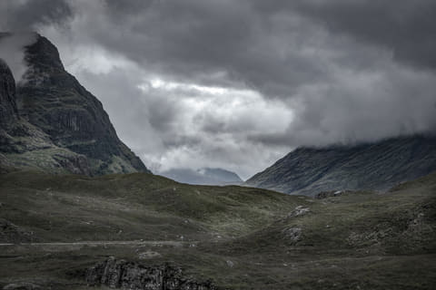
Under Highland Skies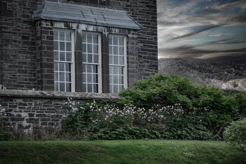
Where Land Meets Silence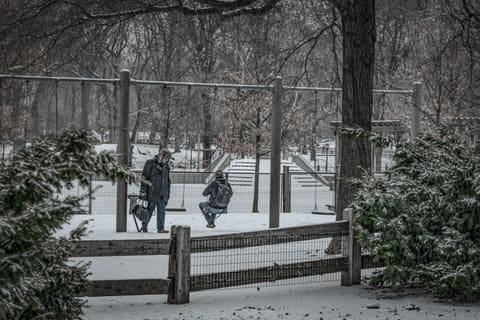
Winter